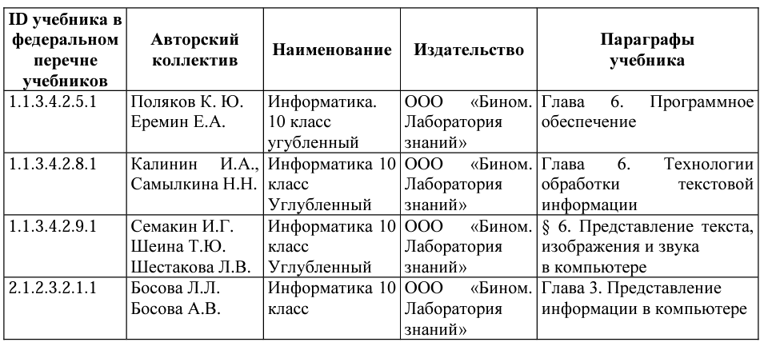

Информационный поиск средствами операционной системы или текстового процессора
Какие позиции кодификатора элементов содержания проверяет:
Что нужно знать/уметь по теме:
ЗНАТЬ:
Основные понятия: текстовый процессор; текстовый редактор; форматы текстовых документов; поиск в текстовом документе; область поиска; поиск и замена данных; шрифт; форматирование шрифта; абзац; форматирование абзацев; символы прописные и строчные; поисковый запрос.
УМЕТЬ:
осознанно подходить к выбору ИКТ–средств для своих учебных и иных целей; классифицировать файлы по типу и иным параметрам; использовать основные виды прикладного программного обеспечения для решения задач поиска информации в текстовом документе; выполнять проверку достоверности полученной информации (пример: сравнение данных из разных источников). осознанно подходить к выбору ИКТ–средств для своих учебных и иных целей; классифицировать файлы по типу и иным параметрам; использовать основные виды прикладного программного обеспечения для решения задач поиска информации в текстовом документе; выполнять проверку достоверности полученной информации (пример: сравнение данных из разных источников).
Где взять информацию по теме
Учебники федерального перечня Минпросвещения России
Какие задания открытого банка выполнить для тренировки:
Задание №10
Вариант №1 Вариант №2 Вариант №3 Вариант №4 Вариант №5 Вариант №6 Вариант №7 Вариант №8 Вариант №9 Вариант №10 Вариант №11 Вариант №12 Вариант №13 Вариант №14 Вариант №15 Вариант №16 Вариант №17 Вариант №18 Вариант №19 Вариант №20 Вариант №21 Вариант №22